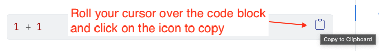

1 + 1[1] 2Reporting with Data in R is a series of lessons and instructions used for courses in the School of Journalism and Media, Moody College of Communication at the University of Texas at Austin. This book is the brainchild of Associate Professor of Practice Christian McDonald, but there are two massive contributors: Assistant Professor Jo Lukito began collaborating and teaching sections of the Reporting with Data in spring 2022 and Anastasia Goodwin taught a section in fall 2023 and they have both have provided valuable edits to this work. I am indebted to both of them.
I’m a strong proponent of what I call Scripted Journalism, a method of committing data journalism that is programmatic, repeatable, transparent and annotated. There are a myriad of programming languages that further this, including Python ( with pandas and Jupyter) and JavaScript (Observable), but we’ll be using R, Quarto and RStudio.
R is a super powerful, open-source, data-centric programming language that is deep with features and an awesome community of users who build upon it. No matter the challenge before you in your data storytelling, there is probably a package available to help you solve that challenge. Probably more than one.
There is always more than one way to do things in R. This book is a Tidyverse-oriented, opinionated collection of lessons intended to teach students new to programming and R for the expressed act of committing journalism. I consider the audience a beginner, hence I strive to make steps as simple as possible, which means I may not go into detail about alternative (and possibly better) ways to accomplish tasks in favor of staying in the Tidyverse and reducing options to simplify understanding. I rarely discuss differences from base R; Tidyverse is my default.
Programming languages evolve constantly, and R has seen some significant changes in the past few years, many of them driven by Posit, the company that makes Rstudio and maintains the Tidyverse packages.
|> in 2021. Posit developers began using the |> in favor of the magrittr pipe %>% in 2022, and this book follows their lead. The two implementations work interchangeably and you’ll see plenty of %>% in the wild.I will try to be consistent in the way I write documentation and lessons, but I am human and sometimes I break my own rules. In general, keep the following in mind:
Things to DO are in ordered lists:
Explanations are usually in text, like this very paragraph.
Sometimes details will be explained in lists:
This book often runs the code that is shown, so you’ll see the code and the result of that code below it.
1 + 1[1] 2When you see R code in the instructions, you can roll your cursor over the right-corner and click on the copy icon to copy the code clock content to your clipboard.

You can then paste the code inside your R chunk.
That said, typing code yourself has many, many benefits. You learn better when you type yourself, make mistakes and have to fix them. I encourage you to always type short code snippets. Leave the copying to long ones.
Sometimes when I am explaining code, it is helpful to match lines of code to the explanation about them, which I do through annotated code.
When there are annotations like this you have to be careful if you are copying code from the book. Either copy it one line at a time or use the copy icon noted above.
Sometimes I need to show code chunk options that are added, like when explaining how to name chunks. In those cases, you may see the code chunk with all the tick marks, etc. like this:
```{r block-named}
1 + 1
```[1] 2or
```{r}
#| label: block-named-yaml
1 + 1
```[1] 2You can still copy/paste these blocks, but you’ll get the entire code block, not just the contents.
I will use callouts to set off a less important aside:
But sometimes those asides are important. I usually indicate that:
You really should learn how to use Markdown as you will use it the whole semester, and hopefully for the rest of your life.

This work is licensed under a Creative Commons Attribution-NonCommercial-ShareAlike 4.0 International License.
Let’s just say this is free on the internet. I don’t make any money from it and you shouldn’t either.
This text stands upon the shoulders of giants and by design does not cover all aspects of using R. Here are some other useful books, tutorials and sites dedicated to R. There are other task-specific tutorials and articles sprinkled throughout the book in the Resources section of select chapters.